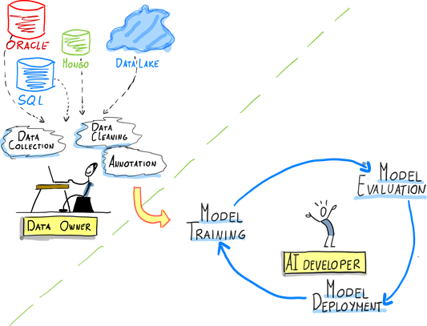
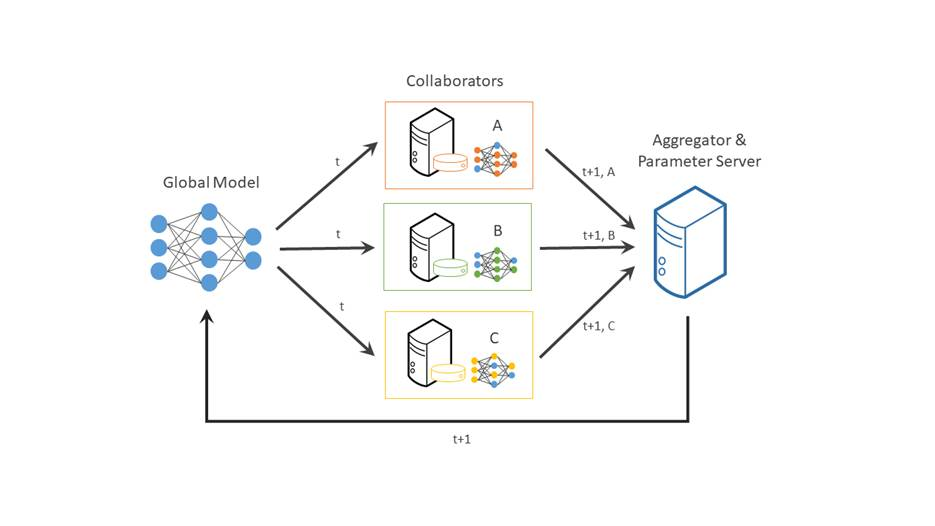

Artificial intelligence applications don’t come together with the snap of a finger. Building AI models requires strong collaboration between multiple teams with numerous responsibilities during the machine learning cycle. Challenges include selecting adequate frameworks, tools, skilled resources and infrastructure. At the most basic level, data owners and developers need to reach common ground to build these world-changing apps. In this post, we’ll take a closer look at what the needs and pain points are for each and delve into how federated learning and OpenFL can help.
ML Personas
A typical AI/ML project involves researchers, auditors, cloud security engineers, among others. However, two of the most critical roles are the data owner and AI developer.
- Data owner. This person is responsible for ensuring that the data used in the AI system is accurate, complete, and representative of the problem domain. They also play a key role in ensuring that the data is properly labeled and annotated, which is necessary for supervised learning tasks.
- AI developer. The dev is responsible for designing, developing and fine tuning the AI system, ensuring its scalability, reliability, and efficiency, and making sure that it is compatible with the data owner's infrastructure.
The following graphic illustrates the roles of these two personas in the AI/ML cycle:

Needs and Pain Points
Understanding the pain points and needs of data owners and AI developers is critical to the success of any ML project. We’ll explore some of the challenges that these two personas face in the AI/ML cycle, as well as their specific needs. By identifying these needs and pain points, we can develop strategies to address them and ensure success.
Needs
Data owners and AI developers face many challenges when it comes with working with their data, here are the top three for each:
Data Owner
- Monetize existing data assets
Data assets can be a valuable source of revenue for companies since they can be curated once and monetized multiple times. The same data can generate revenue in various ways, such as selling it to multiple customers (internal or external), using it for targeted advertising, or developing data products and services.
- Participate in AI value chain/breakthroughs
Playing a part in the AI value chain can provide owners with the benefit of extracting more value from their data assets as they understand what the data will be used for.
- Control over data
Data owners need to maintain control over data and ensure that it’s being used responsibly and securely. This helps protect their intellectual property, maintain customer trust, and prevent data breaches or other security incidents.
AI developers
- Access to large diverse datasets
Devs need to provide trustable models. As the data used to train those models becomes more diverse, it provides an opportunity for the model to learn from a wider range of information, which can help mitigate potential biases.
- Validate AI models on variety of data/real-world settings
Models must be robust, non-biased and accurate. The capability to validate the model with data from multiple sources helps provide a trustable model.
- Protect AI model IP: Security is always an important consideration for AI models, and those models should remain secure under attack. Protection refers to safeguarding the intellectual property (IP) rights of the developers who create them.
Pain Points
Issues for data owners:
- Regulatory Compliance
Depending on the region, regulatory guidelines must be followed for handling/storing data, non-compliance creates serious problems. These include the Health Insurance Portability and Accountability Act of 1996 (HIPAA) and the General Data Protection Regulation (GDPR).
- Lack of AI expertise
Data owners may know their datasets inside out but should consider investing in AI expertise or partnering with AI developers to fully realize the value of their data to leverage AI for maximum data value.
- Re-identification risk
Data that can be connected to an individual and expose information about them makes the data more sensitive -- and risky for the owner. Processes like de-identification can reduce the risk, while still allowing the data to be used.
Problems for AI devs:
- Data control not shared
The reluctance of data owners to give up control of their data limits the availability of data for analysis and decision making, potentially leading to biased or inaccurate AI models.
- Non-generalizable models
If the data provided is not dispersed enough it can’t be generalized in the real word. For example, models built on data from only a few organizations cannot make proper predictions on different data because those models will only understand patterns present in the datasets it trained on.
- Data scarcity
Data scarcity can lead to bias and inaccuracies in AI models and other data-driven technologies, as models may be trained on incomplete or biased data sets. This can have serious consequences, such as perpetuating systemic biases or leading to incorrect or incomplete recommendations.
- Large datasets
Ideally, models should be trained with a considerable amount of data, centralizing large datasets for AI development requires moving the data to a central location, which can be time consuming and resource intensive.
Fortunately, there’s a solution to help you addressing these challenges. In a typical centralized machine learning setting, data is collected from various sources, aggregated into a central repository, and then used to train a machine learning model. Federated learning can help thanks to a distributed machine learning approach that enables collaboration on machine learning projects without having to share sensitive data, such as patient records, financial data, or classified information. The minimum data movement needed across the federation is solely the model parameters and their updates.

https://raw.githubusercontent.com/intel/openfl/develop/docs/images/diagram_fl_new.png
How FL Can Help
A cornerstone of federated learning is that data never leaves the place where it was collected, so both data owners and AI developers can benefit from participation in the AI/ML value chain.
Here’s how federated learning can mitigate these pain points.
For data owners
- Retain Full control over data
Federated learning can help maintain full control over data by allowing organizations to retain ownership and control of their data while still enabling it for use with machine learning.
- Minimize risks of data breaches
Because data remains decentralized and does not need to be transferred to a central location, the risks of data breaches are reduced. Each edge device only has access to its own data and does not need to share it with others, reducing the likelihood of data exposure.
- Monetize data
Federated learning can enable organizations to collaborate with other parties to generate more valuable insights. Multiple organizations can participate in the training process without sharing their raw data, and the final model can be used to generate insights and monetize their data collectively.
For ML developers:
- Access to diverse datasets
Since the data is protected and is not directly shared, it provides AI developers the opportunity to access to diverse datasets and then train robust models.
- Protect IP
Although federated learning helps protect information, an additional layer of security can be added to prevent potential attacks through OpenFL + SGX(Gramine).
Get Started
Federated learning provides a win-win for data owners and AI developers by enabling collaborative model training while maintaining data privacy, improving data diversity, and potentially reducing bias. You can get started with federated learning by trying out a powerful open source framework called OpenFL.
OpenFL is a Python* library for federated learning that enables collaboration on machine learning projects without sharing sensitive or private data. In federated learning, the model moves to meet the data rather than the data moving to meet the model. OpenFL generally follows a classic data science pipeline, with two new workflow components: “Collaborator” and “Aggregator.” For a real-world example, read this case study where Intel Labs collaborated with 71 international healthcare and research institutions to train AI models to identify brain tumors.
Ready to try it out?
The quickest way to test OpenFL is to try out the tutorials.
You can also get started by reading the blog post explaining how to train a model with OpenFL or checking out the online documentation to launch your first federation.
Go to the virtual community meetings, here’s the calendar with time zones in multiple regions.
About the authors
Ezequiel Lanza is an open source evangelist on Intel’s Open Ecosystem Team, passionate about helping people discover the exciting world of AI. He’s also a frequent AI conference presenter and creator of use cases, tutorials, and guides to help developers adopt open source AI tools like TensorFlow* and Hugging Face*. Find him on Twitter at @eze_lanza
Olga Perepelkina, AI Product Manager at Intel
She holds a PhD in Neuroscience and a postgraduate degree in machine learning/data science. She's also an industrial adviser at the School of Doctoral Training at the University of Glasgow. Find her on LinkedIn.